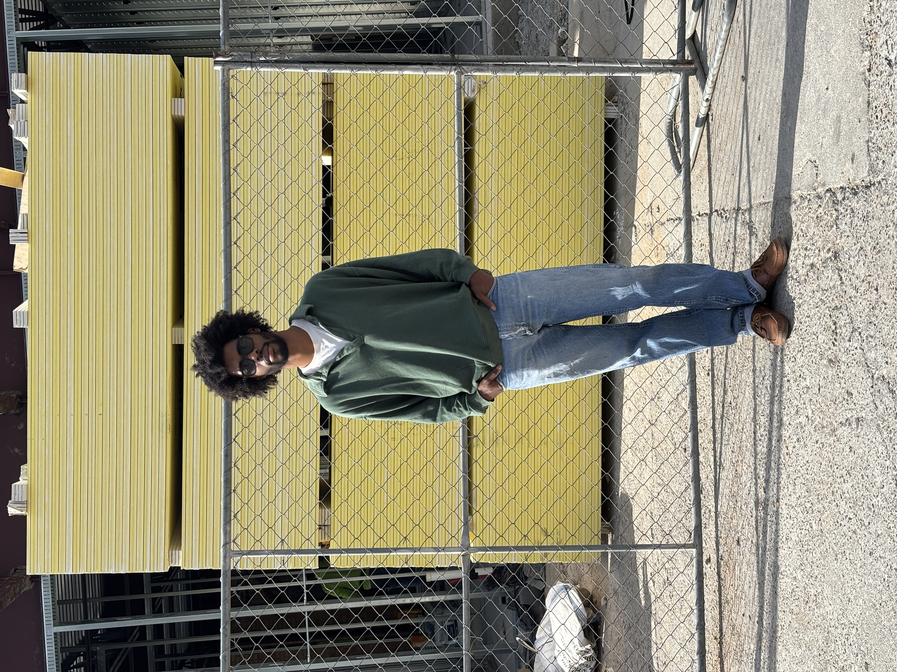

I love the arts, but I think the internet has rewritten my perception of them. To view artistry through the lens of social media gives almost everything filtered through it a hue of vanity and hubris. You can see the work, but you can also see the announcement of the work, the reaction to the work, the reaction to the reaction, the sponsored post about the work, the artist explaining the work, someone criticizing the work, someone defending the artist, and then eventually a video of the artist making coffee.
You know. Relatable.
And somewhere in there, the actual thing gets lost.
To be critical of something, as I aim to do, requires a fair bit of clarity and objectivity to say anything worthwhile. But the internet makes that clarity feel nigh impossible. Everything arrives with numbers attached to it. Everything has already been sorted, ranked, recommended, boosted, buried, liked, reposted or ignored before I’ve even had the chance to form an opinion.
I think this is where I’ve started to feel a sense of failure -- failure to discern between my own biases and what is actually happening in reality.
I’ve unwittingly created my own sort of panopticon, monitoring my thoughts, feelings and output through a set of binaries: did people like it or not? Did it perform or not? Was it worth making or not?
How many likes did this get? Why did this one get more? Did people actually read it?
There is no editor standing over my shoulder asking me to check the numbers.
I am the editor.
I am the intern.
I am the analytics department.
I am, unfortunately, the guy refreshing the page.

does it look like i'm worried?
And that’s a terrible way to experience anything you actually care about.
We must accept the fact that we will never know what others truly think of us, if our friends will always support us, or if our work will ever amount to anything. We can look at the numbers. We can read the comments. We can stare directly into the abyss of our Instagram Insights at 2 AM and convince ourselves that a 13% increase in reach means something about our future.
But we will never actually know.
In the end, the act of doing things in spite of our unknowingness is what makes creative work -- or any work, really -- worthwhile.
Which brings me to something completely unrelated.
Did I mention that I hate ads?
I hate, hate, hate ads.
I’m in marketing myself, so it is not lost on me just how much ads have ruined our favorite magazines and websites. Have you seen Artforum or YouTube lately? Companies don’t even seem to expect you to buy shit from them anymore. It’s just this constant barrage of the same three advertisements from a handful of companies, months at a time, with the sole intent of carving out a small piece of your mind for their product or service to occupy.
And it works.
That is the horrifying part.
You start seeing the same ad enough times and eventually you know the soundtrack. You know the person in it. You know what happens next. You know what they’re selling before the logo appears.
Congratulations, the product has successfully moved into your brain rent-free.
And this has a very real effect on the output we’re seeing today from artists.
We are no longer seeing collectives like Studio Z (look them up -- Senga is amazing) or schools of thought like Bauhaus in the same way. The money has dried up for artists, institutions are struggling, and the internet has become one of the primary places where creative people are expected to build an audience, maintain an identity and, somehow, make a living.
The only way to survive nowadays increasingly feels like online spectacle or partnering with brands.
This has been covered extensively, but I think we can do better than another Nike collaboration or whichever luxury brand Daniel Arsham decides to make an object for next. At some point, “artist collaborates with brand” stops feeling like an interesting collision of disciplines and starts feeling like the entire business model.
And at some point, everything starts to look the same.
Everyone and everything has an agenda to sell or productize. Ads have become intertwined with art and counterculture in such a way that I have difficulty believing almost anything produced as a byproduct of the internet.
Maybe that’s why I have such a hard time deciding what I actually want to post.
Not because I’m anxious about pressing the button.
The button is easy.
It’s everything the button represents.
The moment you put something online, it becomes available to be measured, interpreted and repackaged back to you. You become both the person making the thing and the person standing over it with a clipboard.
Did anyone like it? Did anyone share it? Did the right people see it? Did the wrong people see it? Should I have said that differently? Maybe I should delete it. No, don’t delete it. Maybe I should post it again tomorrow. Actually, maybe I should never post anything ever again.
This is where I think we’ve made things unnecessarily complicated.
You thought the thing was good enough to share. You shared it. Now leave it alone.
Someone might misunderstand you. Someone might not care. Someone might think it’s brilliant. Someone might think it’s stupid. Someone might not see it at all.
None of those things necessarily mean anything.
Maybe the freedom I’m looking for isn’t caring less about the things I make, but caring less about what happens to them once I let them go.
I think we all deserve better ways to connect.
So, if you know me, just text me.
Talking is way more fun anyway.